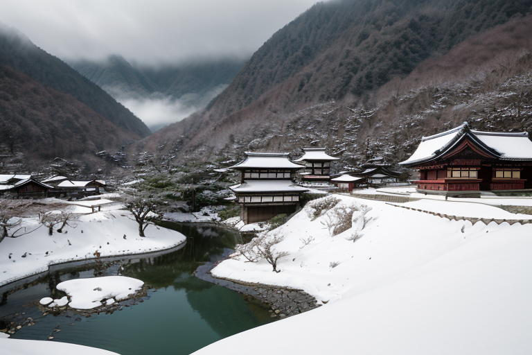
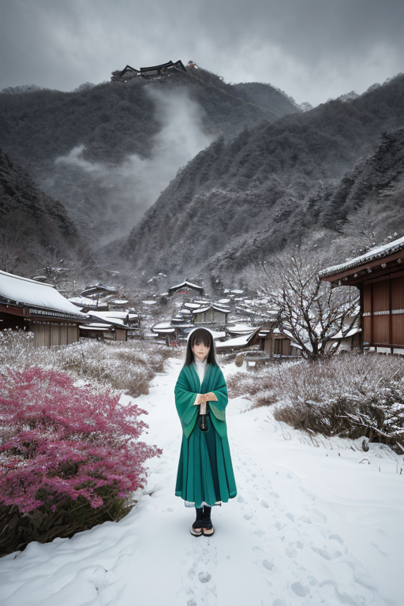
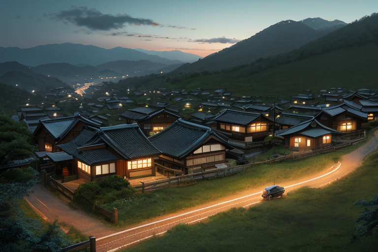
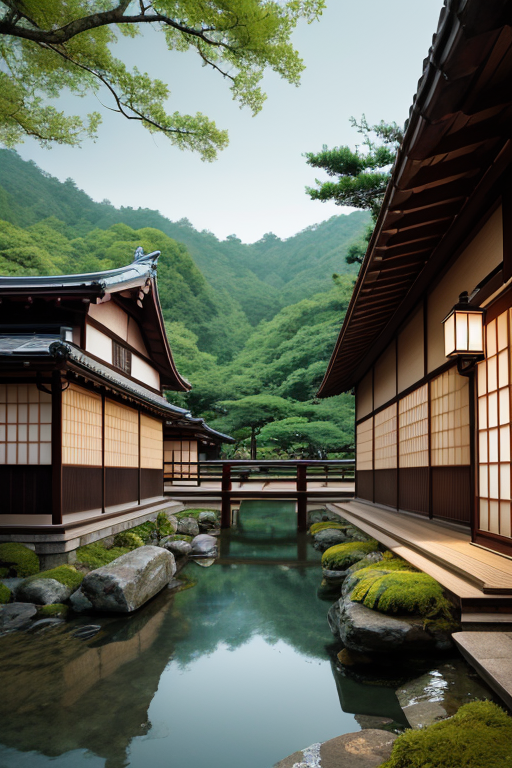
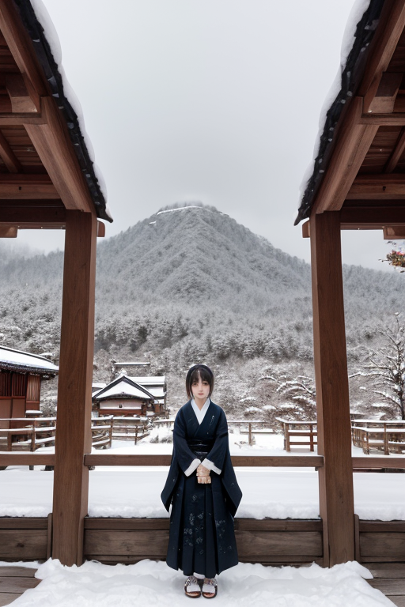

第一章 現実の岐阜
あなたはまだ気づいていない。この土地にも、王がいることを。
日本列島の中央、海から最も遠い県。岐阜は境界の地である。北の飛騨は険しい山岳と深い雪、南の美濃は穏やかな平野と清流。異なる風土が一本の糸のような県境で縫い合わされている。その縫い目に、白川郷の合掌造り集落は佇む。急勾配の屋根は豪雪という境界条件への応答であり、幾世代にもわたる「どう立つか」の結晶だった。
その集落の裏手、人目につかぬ森の奥。断層が地中を這う境界線上に、一人の人物が立っていた。深緑の外套に身を包み、金色の細い線が刺繍されている。ギフリア・バランス、この地を司る均衡王である。彼の目は、足下から遠く関ヶ原の古戦場へと延びる、見えない地質の裂け目を見据えている。ここは歪みが集まる交点だ。彼の役目は、その圧力を微調整し、巨大な破断が起きないよう、絶えずバランスを計ることである。
彼は何も創造しない。災害を消し去ることもない。ただ、境界で起きる衝突のエネルギーを、ほんの少し、ほんのわずかだけ和らげる。それが王の務めだった。

第二章 歪みの兆候
白川郷の合掌造り集落に、異質な歪みが流れ込んだ。観光客の増加は予想を超え、土地が本来持つ静謐なリズムを乱し始めていた。人々の熱気、車の振動、土地への過剰な期待――それらは目に見えない圧力となり、ギフリアの足下で蠢く断層に、微細な刺激として伝わっていく。
「主君、外部圧力、上昇中です」
境界妖精バラントが淡々と報告する。その声には、まだ感情というものはなかった。
「観測地点『高山古い町並み』『下呂温泉』でも同傾向。人の流れが、地質の流れに干渉しています」
ギフリアは目を閉じた。掌を地面にかざす。感じ取れる。土地の呻き。歴史の層が積もり、守られてきたこの地の均衡が、外部からの新しい「力」によって、ほんの少し傾きかけている。関ヶ原で東西の勢力が激突したように、今、静かなる境目で、過去と現在、内と外がせめぎ合っている。
彼は何も止めない。人の営みを否定することは、王の役目ではない。ただ、その衝突が地殻を破断させるほどの衝撃にならないよう、境界線に立つ。無数の見えない線を張り、流入するエネルギーを分散させ、吸収させる。合掌造りの屋根が雪の重みを分散させるように。

第三章 王の葛藤
白川郷の合掌造りに、新しい風が吹き始めていた。観光客の増加は村に活気をもたらす一方で、静かな生活のリズムを乱し、地盤に微かな軋みを生じさせていた。ギフリアは、集落を見下ろす山腹に立つ。流入する外部のエネルギーは、時に断層を刺激する振動となる。
「受け入れるか、遮断するか」。バラントが問う。王は黙ったまま、手のひらをかざす。無数の金の均衡線が、集落と外とを結び、流入する「力」を和紙が水を吸うように分散させていく。完全な遮断は、かえって歪みを増幅させる。関ヶ原で決着をつけたように、単純な二者択一はこの地を傷つける。
彼は感じ始めていた。拒絶したいという、冷たい感情を。変化そのものを否定したい王の本能を。だが、同時に、古い町並みで灯る新しい店の灯りや、郡上踊りに加わる異国の足取りに、ほのかな「希望」という熱も感じる。境目に立つとは、どちらにも与せず、どちらも見据えること。彼は深緑の衣を翻し、均衡線の張力を微調整した。流れを止めず、しかし、破壊的な奔流にはさせない。ただ、その狭間で、揺れる地盤の上に、今という時間を可能な限り長く保とうとする。

第四章 妖精との対話
郡上八幡の水路沿い。水車が回る音と共に、バラントは均衡王の傍らに現れた。その目は、常に二つのものを等しく見つめている。
「王よ。我々の役割は、出会いそのものを生み出すことではありません。出会いが引き起こす『衝撃』を、破壊ではなく『変化』へと導く緩衝材であることです」
彼は手に持った和紙を揺らした。一枚は純白、一枚は飛騨の楮で漉かれた琥珀色。二枚を重ね合わせると、互いの色が滲み、新しい色調が生まれた。
「白川郷の合掌造りも、外からの技術と内なる知恵が出会い、融合した境界の産物。関ケ原も、東西の力が激突した巨大な境目でした。出会いは常に、揺れと熱を伴う。それを完全に鎮めるのではなく、そのエネルギーが全てを破壊する前に、新たな形へと『流す』こと。それが、境目に立つ者の役目です」
別れについて問う王に、バラントは静かに答えた。
「別れもまた、一つの出会い。内と外の境目が再定義される瞬間。哀しみという歪みを、記憶という持続可能な形へと調整する。それが、我々のなすべき微調整です」
王は、妖精の言葉に、自らの役割の本質を見た。

第五章 微調整と余韻
白川郷の合掌造り集落に、初雪が静かに降り始めた。観光客の姿が途絶え、集落は本来の静寂を取り戻す季節。ギフリアは、雪の重みが屋根の茅に均等に分散されるよう、目に見えない支えを微調整した。彼の役目は、過剰な負荷が一点に集中するのを防ぎ、この独特の構造が次の春まで保たれるよう、均衡を保つことだ。
春には再び多くの人が訪れ、この地の静けさはかき乱される。しかし王は、その「乱れ」そのものを否定しない。人の流れは文化の新たな境界線を生み、時に摩擦を起こす。彼が調整するのは、その摩擦が破壊的な衝突に至らない、ほんのわずかなタイミングと方向だ。かつて関ケ原で東西の勢力が激突したこの地で、彼は衝突そのものを消せないが、その余波が未来へと継承される「形」を、ほんの少しだけ整える。
郡上八幡で夜通し続く踊りの輪。その熱気とリズムは、時間の境界を曖昧にする。王はその中心に立たず、縁で静かに見守る。踊り手の一歩が乱れ、倒れそうになる瞬間、ほんの少し地面の傾きを調整する。彼の仕事は、派手な介入ではなく、物事が自然な成り行きで続いていくための、ほとんど気付かれない支えだ。
雪は降り積もり、集落を覆う。内と外の境目は白一色に溶ける。王は、この静けさがもたらす孤独という歪みをも、やがて訪れる人の気配へと変容させる準備を、淡々と進めていた。別れと出会いの循環そのものが、この土地の持続の形なのだ。
あなたの町にも、王がいる。